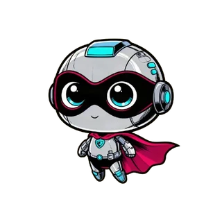

EȘTI OFFLINE!
Spark nu găsește semnal. Paginile pe care le-ai vizitat deja funcționează în continuare; restul revin imediat ce ai internet.

Spark nu găsește semnal. Paginile pe care le-ai vizitat deja funcționează în continuare; restul revin imediat ce ai internet.